You will be speechless in the face of the beauty of the two lakes formed in the crater of the island of Sao Miguel. Take the opportunity to visit the thermal pools in the natural park of Caldeira Velha and enjoy the Azores’ incredible flora.Book your flight tickets at the best price for Ponta Delgada on the island of Sao Miguel, the main island of the Azores, as well as your accommodation and discover the most beautiful landscape in Europe. This is the trip of a lifetime if you seek real emotions and intact landscapes. You have ranked it as the thing you would like to do most in Europe, do not waste a second and book your holiday in the Azores, one of the most beautiful regions in the world.
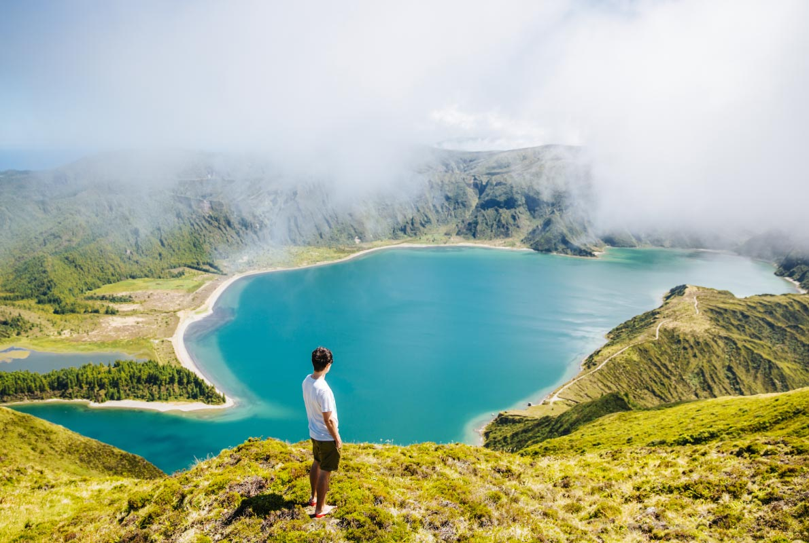 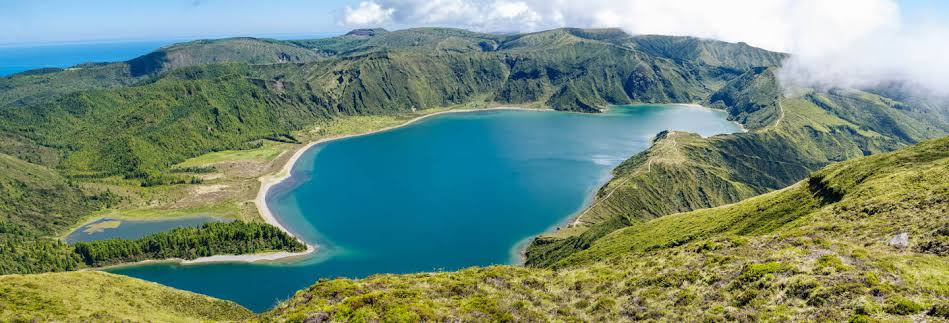What's more magical and exceptional than visiting the Santa Claus Village in Finland? Come and meet Father Christmas, his workshop and the post office which receives all the letters from children around the world; don’t forget to visit his reindeer and enjoy a little sleigh ride or snowmobile drive in the snow.Today Santa Claus Village is a travel destination in Rovaniemi, Finland that has become a significant international centre for tourism. Each year, the destination attracts more visitors who are provided an ever-growing number of services.
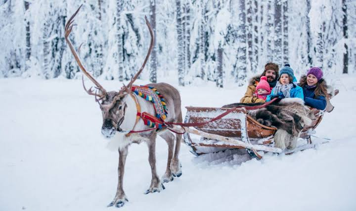 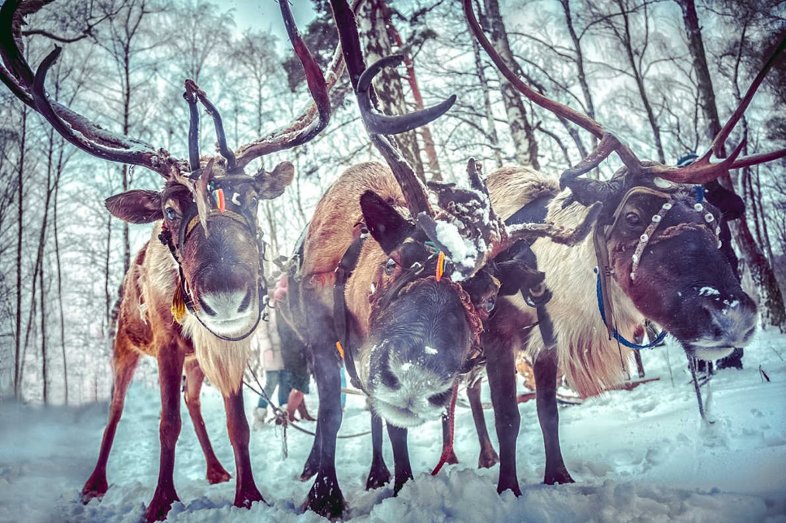The Meteora is a rock formation in central Greece hosting one of the largest and most precipitously built complexes of Eastern Orthodox monasteries, second in importance only to Mount Athos. The six (of an original twenty four) monasteries are built on immense natural pillars and hill-like rounded boulders that dominate the local area. It is located near the town of Kalambaka at the northwestern edge of the Plain of Thessaly near the Pineios river and Pindus Mountains.
Meteora is one of the most extraordinary places in the world and undoubtedly one of the most spectacular religious sites. Come and discover the Orthodox monasteries built on these incredible rocks. The best way to enjoy it is by following a hiking trail for a few hours to savour unique moments in this exceptional site classified as UNESCO World Heritage.
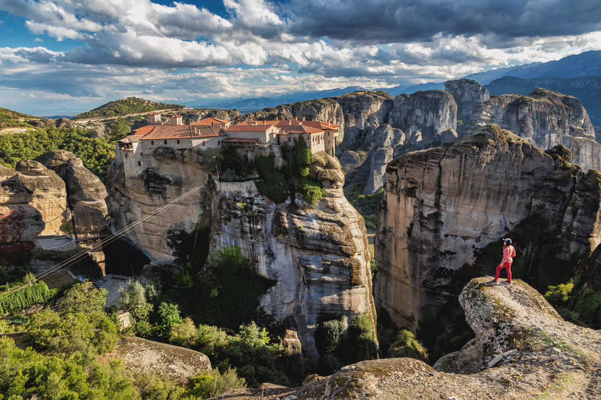 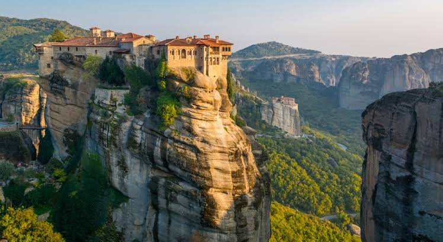No need to go to Venice to enjoy a romantic cruise on the canals of one of the most beautiful cities in Europe. Amsterdam is ranked among the most romantic destinations in Europe and is perfect for lovers looking for a city-break that combines relaxation, shopping, museums, bike rides and boat trips.
Amsterdam, capital of the Netherlands, has more than one hundred kilometers of grachten (canals), about 90 islands and 1,500 bridges. The three main canals (Herengracht, Prinsengracht and Keizersgracht), dug in the 17th century during the Dutch Golden Age, form concentric belts around the city, known as the Grachtengordel. Alongside the main canals are 1550 monumental buildings. The 17th-century canal ring area, including the Prinsengracht, Keizersgracht, Herengracht and Jordaan, were listed as UNESCO World Heritage Site in 2010, contributing to Amsterdam's fame as the "Venice of the North".
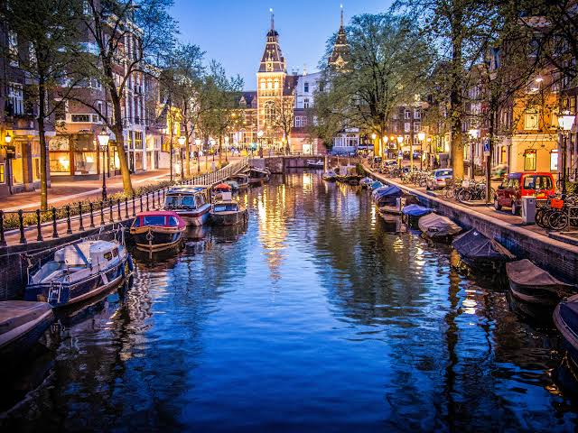 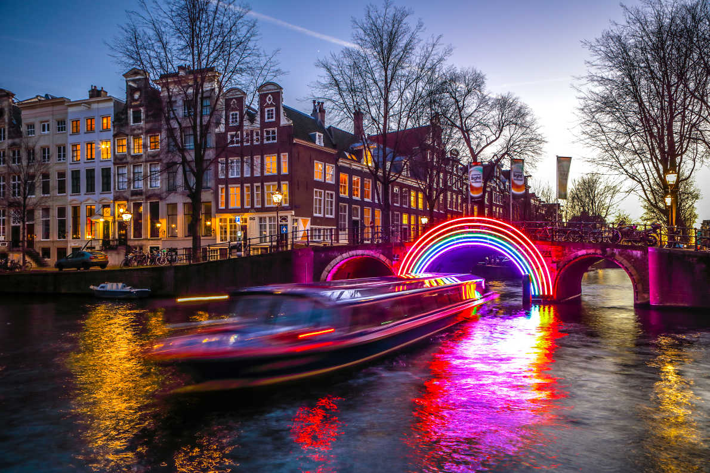Welcome to heaven on earth! The Krka Park is Croatia in all its uniqueness and splendour. It must be seen to be believed! This 110km2 park is probably one of the most beautiful wonders of the world. Sumptuous cascades of water pour into lakes of turquoise crystalline water. Take your family, lover or friends with you for a few walking hours of delight. The journey is yours. Leave the park at any time and and take a shuttle back to your car in the car park.
Sumptuous cascades of water pour into lakes of turquoise crystalline water. Take your family, lover or friends with you for a few walking hours of delight. The journey is yours. Leave the park at any time and and take a shuttle back to your car in the car park.
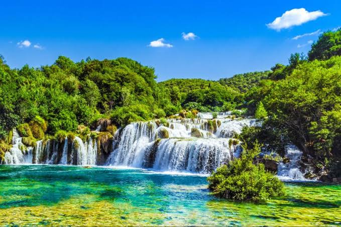 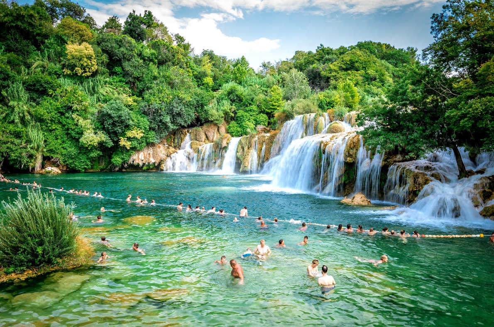Istanbul is and remains one of the most incredible destinations in the world. You can try and imagine the beauty of this beautiful city but this will be a far cry from reality. Take a walk in this city both very lively and quiet, very gentle. It must be its river, the Bosphorus, which brings all this sweetness to this incredible city. The best way to discover Istanbul is to treat yourse lf to a cruise between the two continents and a delicious meal on a 3-hour cruise on the Bosphorus.
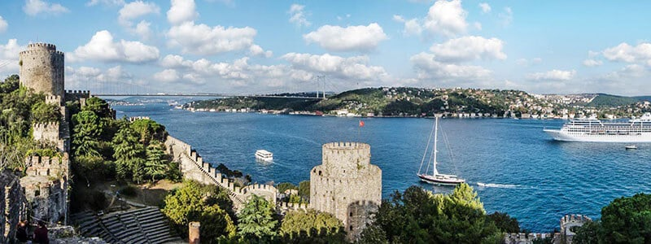 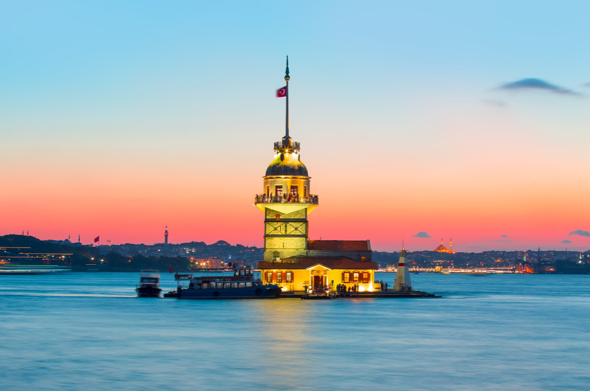"Schmugglerbucht"? If you find this name unpronounceable, you can always say "Navagio beach" the other name of this hidden beach. Imagine going back in time when pirates roamed the seas. Take a day boat trip on the sublime Zakynthos Island where the water is electric blue, the sea warm and calm, the sand white and where the sun shines almost all year round. You will also discover the wreck of the "Panagiotis" stranded on this beach in 1980 and also the magnificent nature which surrounds this beach voted one of the most beautiful beaches of Europe.
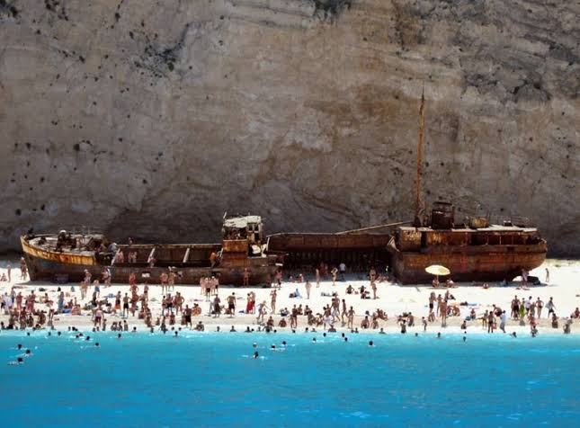 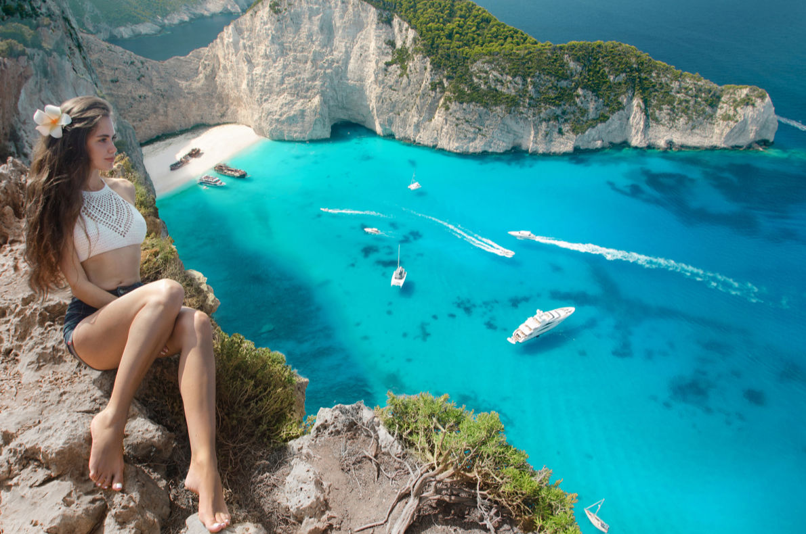The Plitvice Lakes National Park has been voted by travellers around the world as the most beautiful national park in Europe. Located between two extraordinary cities, the city of Zagreb, voted Best Destination for Christmas and Zadar elected Best Destination in Europe, this national park is one of the most gorgeous places to visit in Europe.This activity is accessible to all audiences since you can choose the duration of your walk and exit at different points of the park. You can use the shuttle to return to your car. This is by far one of the most beautiful landscapes you can see in Europe so do not delay and treat yourself to a holiday in sunny Croatia.
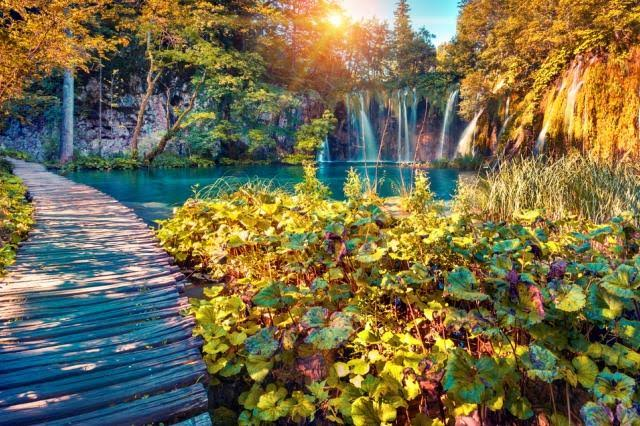 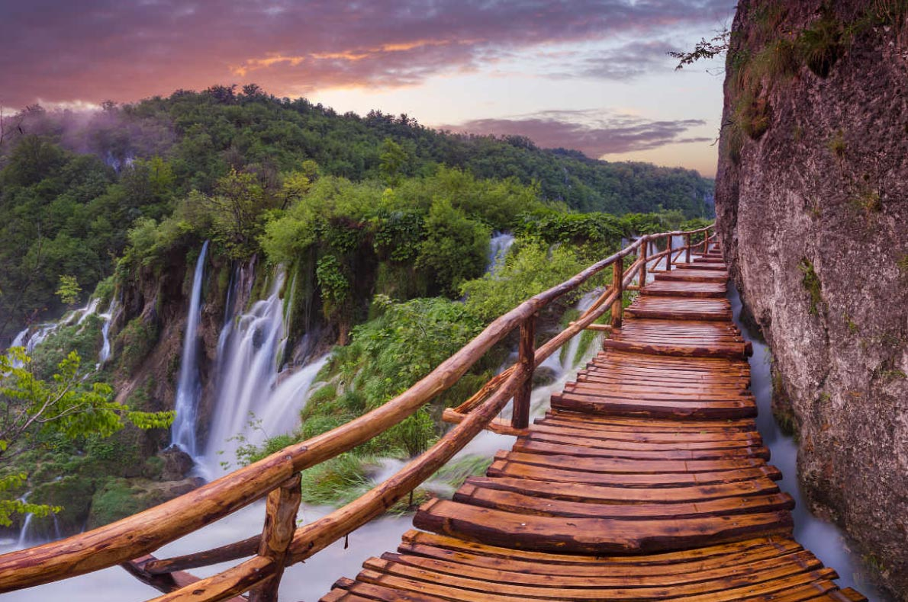Whether you are passionate about fashion, history, music, architecture, nature or shopping, you will find happiness in London. Have you ever been there? London moves constantly, constantly innovating; the city you visited 2 years ago no longer exists and has become even more amazing, even more attractive. During an hour-and-a-half cruise on the Thames you will enjoy a sumptuous meal and finish with tea, the national drink, while observing an incredible city that fascinates millions of travellers each year.
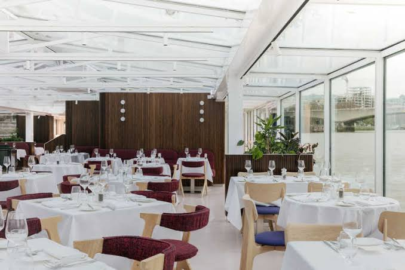 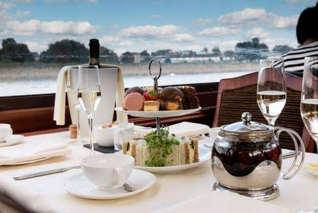Classified among the most beautiful beaches in Europe, the beach of Benagil Cave is a hidden beach which you will only be able to access by boat.The most well-known of the rock formations is the Cave of Benagil (Gruta de Benagil), where the Algar de Benagil is also located. This gigantic cave is sometimes referred to as the Benagil Cathedral because of the various arches it forms, which, viewed from the outside of the cave, give it the appearance of a cathedral. The imposing aspect of the Cathedral, with its various shades of yellow, remind us of the devastating power of nature. For years, wind and water dug one of the planet’s most fantastic caves, which attracts thousands of tourists to windward Algarve every year.
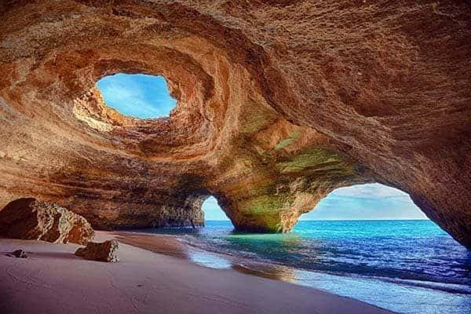 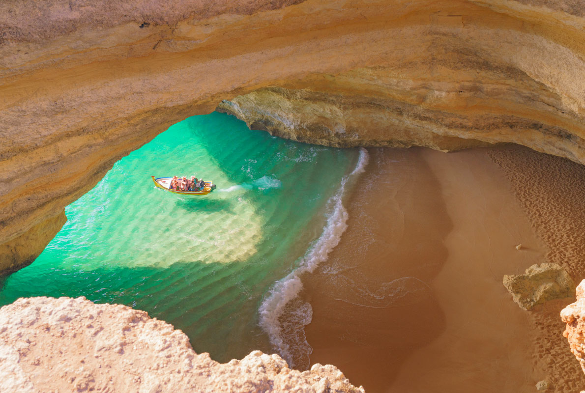


© Sernel Miranda Asunto (2019)